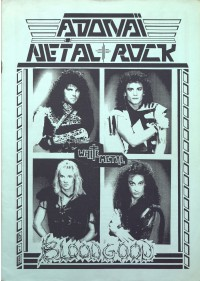

CMnexus
:
Contemporary Christian culture, music, and media.
Magazines
Profiles
Dove Awards
cmnexus.org
CM
nexus
→
Magazine list
→
Adonai Metal Rock
→
Issues
Adonai Metal Rock
Jul 1988, #1
< -- Prev
Issue list
Next -- >
Cover

Writers in this Issue
Baillod, Daniel
Bloodgood
Cover Feature:
"La Vengeance m'appartient dit le Seigneur"
Vengeance Rising
, Sanctuart (
Bob Beeman
); white metal; other bands mentioned;
Stryken
photo
Article:
"Watch Out, Satan!"
Believer (CA)
"Voici une Liste Non Exhaustive des Groupes White Metal"
White Metal band-list
Edito:
"Jesus Christ R00000000000000000000000000000000000000CKSSS !!!" by Daniel Baillod
overview explaining the magazine
commentary:
"Bloody Cross"
on the message of the cross (as worn by metal bands)
This is the first issue of
Adonai Metal Rock
.
Relevant Links
The Corroseum Issue Repository
< -- Prev
Issue list
Next -- >
CMnexus
(noun)
The magazine index
of modern music
and Christianity
© 2011 CMnexus. Last updated May 2025.
Contact:
Rants and other correspondence to:
editor -AT- cmnexus
-DØT- org
About